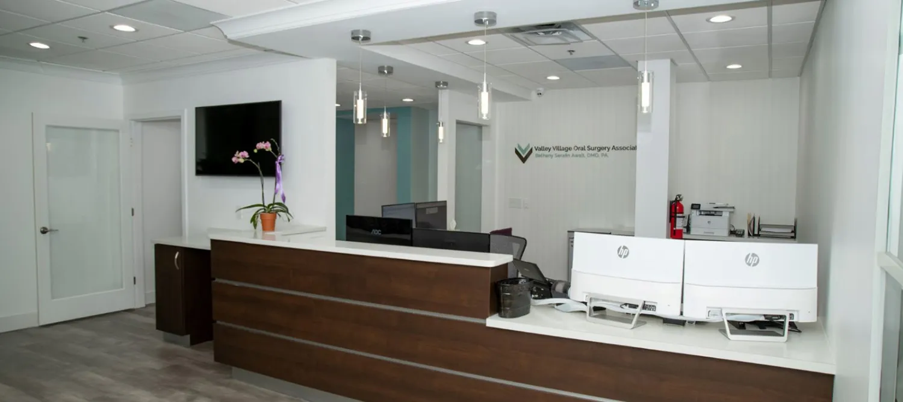
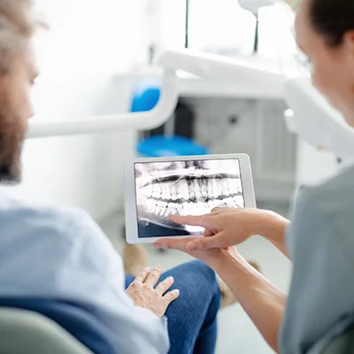

Wisdom teeth
Removal of third molars, including teeth that are impacted, angled sideways or still buried under bone.
Valley Village Oral Surgery Associates is a two-surgeon practice in Pikesville. Wisdom teeth, dental implants, extractions and oral pathology, with sedation for every procedure and a surgeon who calls to check on you afterward.
Referred by your dentist? Bring the referral slip and any x-rays they took to your first visit.

Tooth pain, swelling, infection and broken teeth are treated as emergencies here. Call the office and tell the front desk it’s urgent.
Most people arrive here because a dentist sent them. These are the procedures that referral is usually about.
Removal of third molars, including teeth that are impacted, angled sideways or still buried under bone.
Surgical removal of teeth that are broken, decayed past saving or crowding the rest of the arch.
For a tooth that has not come in on its own. We uncover it and bond a bracket so your orthodontist can guide it into place.
A titanium post placed in the jaw to carry a crown, bridge or denture that stays where it belongs.
Rebuilds the ridge when the jaw has thinned after a tooth has been missing a while, so an implant has something to hold onto.
Adds height beneath the sinus floor in the upper back jaw so an implant can be placed safely.
Finding the source of the pain and treating it, including abscesses and teeth that have died.
Removes the infected root tip of a tooth that is still sore after a root canal, so the tooth itself can be kept.
Examination and biopsy of sores, lumps and patches in the mouth that have not healed on their own.
Care for swelling, broken teeth, bleeding and problems that come up after surgery.
Two board-certified oral and maxillofacial surgeons. Both trained in hospitals, both still teaching.
Owner and oral & maxillofacial surgeon
Dr. Awalt earned a bachelor’s degree in biology magna cum laude, then completed her dental education at the University of Pittsburgh School of Dental Medicine. Her hospital residency in oral and maxillofacial surgery was at Woodhull Medical Center in New York City.
She has practiced for more than twenty years, teaches as a clinical instructor, and has taken part in surgical missions abroad and volunteer dental programs closer to home. Her day-to-day work is extractions, dental implants, bone grafting, oral pathology and outpatient anesthesia.

Oral & maxillofacial surgeon
Dr. Charnowitz studied biology at Yeshiva University and earned his dental degree at the University of Maryland School of Dentistry, where he was inducted into several honor societies. He completed his oral and maxillofacial surgery residency at Broward Health Medical Center in Fort Lauderdale and served as chief resident in his final year.
His scope covers wisdom tooth removal, implant placement, bone grafting and sinus augmentation, surgical extractions, oral pathology, facial trauma, corrective jaw surgery and office anesthesia. Away from the office he is a volleyball, pickleball and swimming man, married to Gabby, with four children and a necktie collection people comment on.
Both surgeons hold membership in


Anesthesia is chosen for the person and the procedure rather than applied by default. Dr. Awalt serves as an Anesthesia Evaluator for the Maryland State Board of Dental Examiners, which is to say she is one of the people the state sends to inspect other offices.
For shorter procedures. The area is numbed, you stay fully awake, and you drive yourself home the same way you would after a filling.
Medication taken before the appointment that leaves you calm and drowsy. You stay awake enough to respond, and most of the visit will not stay in memory.
Given in the office by the surgeon, so you are fully asleep for the procedure. It requires a pre-operative consultation, nothing to eat or drink after midnight, and an adult to drive you home.
Reviews left on Google by people who came in for the procedures above.
“Absolutely incredible experience. I have never had a doctor be so available and helpful after a surgery.”
“Dr. Awalt was phenomenal! She took out all 4 of my wisdom teeth and it was a breeze.”
“Bethany recently extracted my infected molar. Her office got me in for an appointment quickly.”
“I had an extraction done by Dr. Awalt, and it could not have been a better experience.”
“Dr. Awalt was very gentle with my mom and considerate of her dental issues.”
“I had a pleasant experience and a successful procedure in getting my wisdom teeth removed.”
The first visit is paperwork, an exam, x-rays if they are needed, and a plan. Sometimes the procedure happens the same day. More often it gets scheduled.


Patients come to Pikesville from across the metro area, sent by their general dentists and orthodontists. Both surgeons hold hospital appointments in the city, so complex cases stay inside one chain of care.
Tell us what is going on and the front desk will call you back to schedule. If you are in pain, call instead. It is faster.
Monday to Friday
8:00 am to 4:00 pm